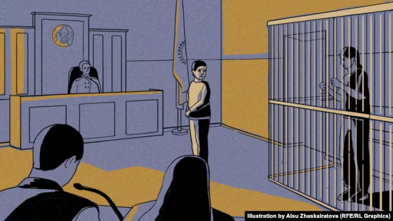
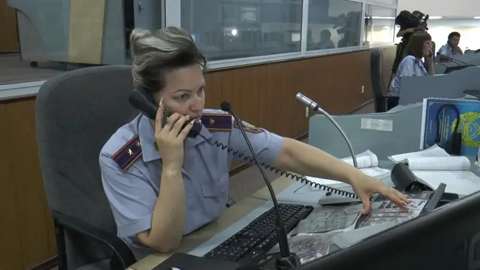
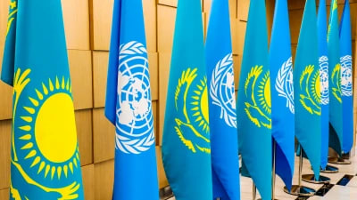
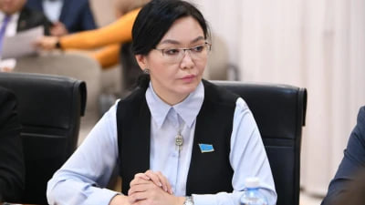

TOZBE
Бастапқы бет
Актуалды сұрақтар
Біз туралы
Cтатистика
Материалдар
Көмек
Үш баланың анасы күйеуін өлтіріп, сүйегін суға лақтырды. Неге?

Толығырақ
Полицияда отбасындағы зорлық-зомбылықпен күрес жөніндегі арнаулы бөлімше құрылады

Толығырақ
Маңызды қадам: БҰҰ елімізде қабылданған тұрмыстық зорлық-зомбылық туралы заңды қолдады

Толығырақ
Неге қазақстандық әйелдер тиран күйеуіне шыдайды? Психологтар 5 себебін атады
Толығырақ
Экс-министр Қуандық Бишімбаев әйелін өлтірді - БАҚ
Толығырақ
Полицияда отбасындағы зорлық-зомбылықпен күрес жөніндегі арнаулы бөлімше құрылады
Толығырақ
Жаңа заңда әйел құқығы қалай қорғалмақ
Толығырақ
Тұрмыстық зорлық-зомбылықпен күресу қадамын қоғам түсінеді – сенатор

Толығырақ
НАСКОЛЬКО СЕЙЧАС ЗАЩИЩЕНЫ ЖЕРТВЫ БЫТОВОГО НАСИЛИЯ В КАЗАХСТАНЕ
Толығырақ